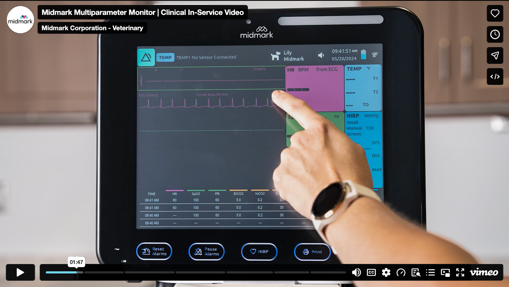

Build the narrative
Work through extensive source footage and assemble it around the supplied script, preserving the flow of the clinical instruction.
A clinical training video shaped through months of detailed editing, original visual effects, accessible captions, and thoughtfully organized chapters.

The project came to me with a completed script and a large collection of video clips. My responsibility was to bring those pieces together into a clear, polished clinical in-service video that veterinary professionals could follow and return to when needed.
Over several months, I refined the edit, developed original visual effects, prepared captions, and structured chapter navigation. The goal wasn't simply to make the footage look polished—it was to make the information easier to understand.
Full video editing in Adobe Premiere Pro, post-production effects, caption preparation and synchronization, and chapter organization. The original script and filming were provided by others.
Work through extensive source footage and assemble it around the supplied script, preserving the flow of the clinical instruction.
Develop and fine-tune original effects to draw attention to relevant information without distracting from the demonstration.
Try different approaches, review the experience myself and with others, and refine effects based on what made the content clearest.
Prepare synchronized captions and chapters so viewers can follow the lesson and revisit specific monitor functions.
With many layers of video, audio, effects, and subtitles, the Premiere Pro timeline shows the level of detail behind the finished resource.

“Knowing which effects actually helped the viewer—and which ones just added complexity.”
That question guided much of my trial and error. I tested different approaches on myself and with others, then continued refining the edit with clarity as the priority.
For a detailed training resource, finding the right moment matters. I prepared synchronized captions and organized the finished video into chapters so viewers could move directly to specific topics.
The chapter menu makes key functions—like quick access buttons, ECG, pulse oximetry, blood pressure, and CO₂ monitoring—easier to locate.

Midmark Multiparameter Monitor | Clinical In-Service Video. A step-by-step educational resource for veterinary professionals.
This project pushed me to think about video from the viewer's perspective. Every effect, cut, caption, and chapter needed to serve the content—not compete with it.
It reinforced a principle I bring to web and visual design too: thoughtful creative choices can make complicated information feel approachable.
Explore more projects ↗